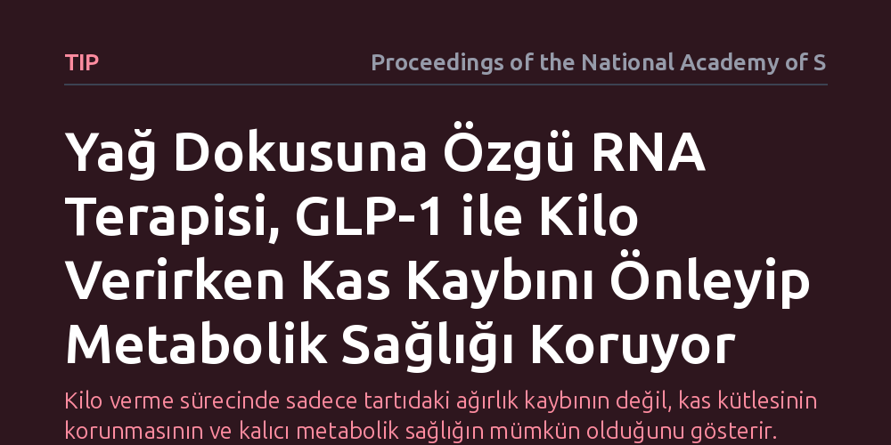

TIP · Proceedings of the National Academy of Sciences · 2026-10-09
GLP-1 tedavilerinde görülen kas kaybını önlemek amacıyla beyaz yağ dokusundaki ZFP423 faktörünü hedefleyen yeni bir RNA terapisi geliştirildi. Bu yöntem, yağ dokusunda ısı üretimini tetikleyerek kas kütlesini korumayı ve kilo kaybı sonrasında metabolik sağlığı sürdürmeyi sağladı.
Kilo verme sürecinde sadece tartıdaki ağırlık kaybının değil, kas kütlesinin korunmasının ve kalıcı metabolik sağlığın mümkün olduğunu gösterir.

Günümüzde obezite tedavisinde büyük ilgi gören GLP-1 reseptör agonistleri, vücut ağırlığını hızla düşürmede oldukça etkilidir. Ne var ki bu ilaçlarla zayıflayan bireylerde tartıda görülen düşüşün önemli bir bölümü sadece yağ dokusundan değil, aynı zamanda hayati öneme sahip yağsız kütleden, yani iskelet kaslarından kaynaklanmaktadır. Kas kütlesinin azalması ise yalnızca fiziksel gücü ve hareket kabiliyetini geriletmekle kalmaz; dinlenme halindeki bazal metabolizma hızını da belirgin biçimde yavaşlatır.
Metabolizma hızının bu şekilde düşmesi, tedavi kesildiğinde verilen kiloların hızla geri alınmasına ve metabolik dengenin bozulmasına zemin hazırlamaktadır. Bu durum, kilo yönetiminde temel hedefin yalnızca kalori kısıtlamak veya iştahı bastırmak değil, metabolik motor vazifesi gören kas dokusunu koruyarak yağ yakımını sürdürmek olduğunu ortaya koymaktadır. Bilim dünyasının yanıt aradığı kritik soru, zayıflama tedavileri uygulanırken kas erimesinin nasıl engellenebileceğidir.
Araştırma ekibi bu açmazı aşmak için dikkatini doğrudan yağ dokusunun biyolojik özelliklerine çevirdi. Vücudumuzdaki beyaz yağ dokusu fazla kalorileri depolarken, bej ve kahverengi yağ dokuları enerjiyi ısıya dönüştürerek kalori harcamaktadır. Hücre çekirdeğinde yer alan ZFP423 adlı gen düzenleyici proteinin, beyaz yağ hücrelerinin kalori yakan termojenik bej yağ hücrelerine dönüşmesini baskıladığı ve onları yağ depolamaya zorladığı bilinmektedir.
Araştırmacılar, bu baskılayıcı mekanizmayı devre dışı bırakmak amacıyla sadece yağ dokusuna ulaşacak şekilde tasarlanmış özel bir RNA terapisi geliştirdi. Deneysel modelde uygulanan bu yaklaşımda, GLP-1 kaynaklı zayıflama sürecinde ZFP423 geni hedeflenerek susturuldu; ardından yağ dokusunun ısı üretme kapasitesi, vücut kompozisyonundaki değişimler ve kas kütlesinin korunumu detaylı moleküler analizlerle incelendi.
Elde edilen sonuçlar, yağ dokusuna yönelik RNA terapisinin ZFP423 faktörünü başarıyla susturarak beyaz yağ dokusunda güçlü bir ısı üretimi (termogenez) başlattığını gösterdi. Yağ hücreleri aktif bir biçimde kalori yakmaya başladığında, GLP-1 tedavisinin oluşturduğu enerji açığı öncelikli olarak yağ depolarından karşılandı.
Çalışmanın en dikkat çekici bulgusu, bu termojenik mekanizmanın devreye girmesiyle birlikte GLP-1 kaynaklı kas kütlesi kaybının belirgin biçimde durdurulması oldu. Vücut enerji üretmek için kas proteinlerini yıkmak zorunda kalmadı; böylece yağsız kütle korunurken metabolik hızın düşmesi engellendi. Tedavi sonrasında da metabolik sağlığın daha dengeli ve sürdürülebilir kaldığı gözlendi.
Bu çalışma, obeziteyle mücadelede sadece iştahı baskılayan tek yönlü yaklaşımların ötesine geçilmesi gerektiğini ortaya koymaktadır. İştahı azaltan hormon benzeri tedaviler ile yağ dokusunun metabolik karakterini değiştiren RNA terapilerinin bir arada kullanılması, kilo yönetimini salt bir kütle kaybından çıkarıp sağlıklı bir vücut kompozisyonu inşasına dönüştürebilir.
Yine de bu bulguların klinik uygulamaya geçişi için temkinli olmak gerekir. Araştırma klinik öncesi deneysel aşamada olduğundan, hedefe yönelik RNA iletiminin insanlardaki güvenilirliği, olası yan etkileri ve uzun vadeli metabolik sonuçları kapsamlı klinik deneylerle doğrulanmalıdır.